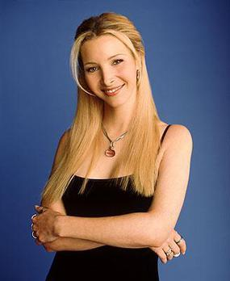

The characters are monica geller, rachel green, ross geller, joey tribbinanie, chandler bing and phoebe buffay. On this page we will be talking about all the main characters indivible.
Monica Geller

monica Geller is one of the main characters. She is the younger sister of Ross Gelller an other main character of the show. Monica is for sure the mom of the friend group. She likes to clean, cook and have game nights but she is vry competitive. At the beginning of the show she worked at a restaurant, trough the show she loses her job but then later on gets her own restaurant.
All through Monica's life she has been kinda bad at relationships and after ending a important relationship after knowing it wouldn't go anywhere, she thought she would never find love but she finds her soulmate after all get's married, adopods children and has a happy life.
Rachel Green
Rachel Green is the queen, the girly girl of the group. She appears in the second scene after running away form a loveless wedding and marraige.
Phoebe buffay
Phoebe is the funniest female member of the group.